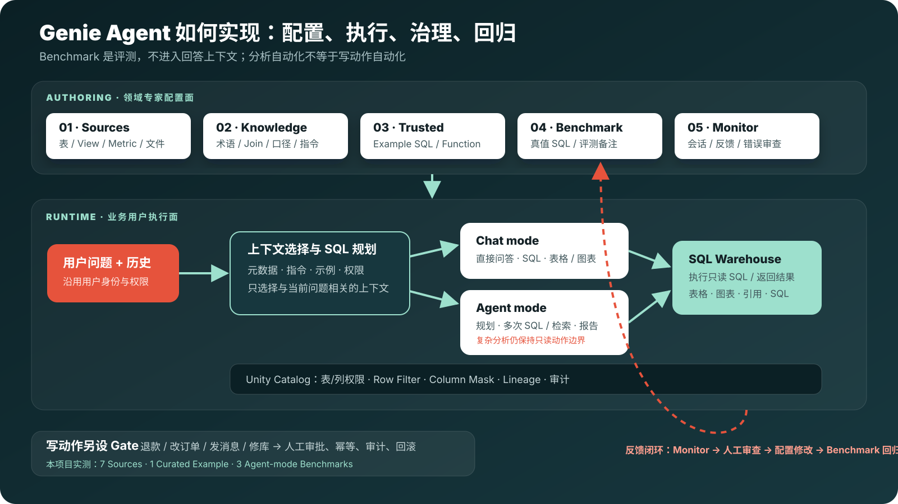
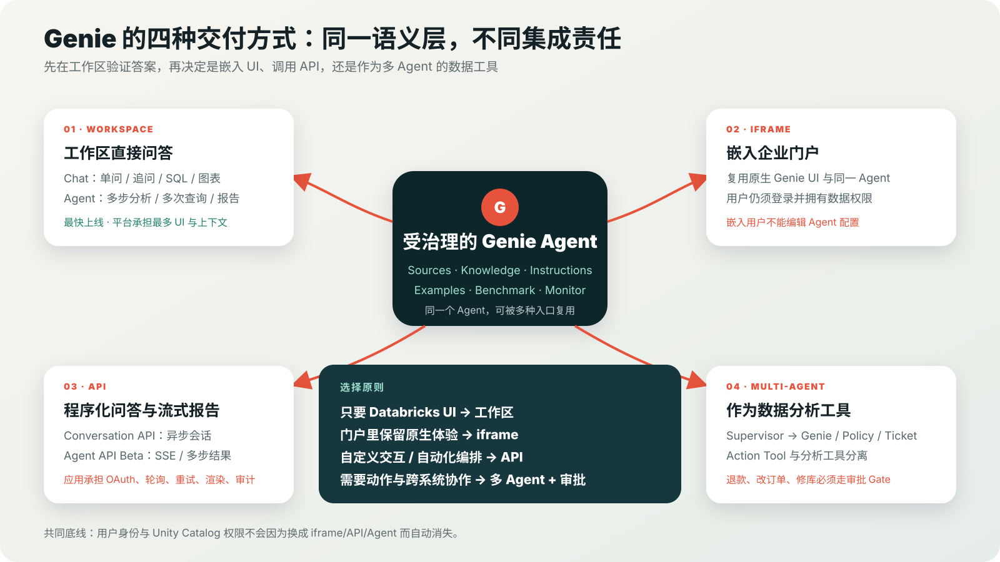

问数据
用 Chat 做直接问答和追问；用 Agent mode 做多步分析与结构化报告。
三个角色
同一个 Agent 分成业务使用、领域配置和平台集成三层；不要把三层职责混在一个超级 Agent 里。
用 Chat 做直接问答和追问；用 Agent mode 做多步分析与结构化报告。
维护 Sources、Instructions、Knowledge、Examples，并用 Monitor 与 Benchmark 纠错。
管理身份、Unity Catalog、Warehouse、嵌入/API、审计与写动作审批。
HOW IT WORKS
真实查询仍在 SQL Warehouse 执行；Unity Catalog 权限不会因为使用自然语言而失效。

MULTIPLE USES
选择入口时，真正变化的是谁负责 UI、身份、会话、失败处理和写动作，而不是是否遵守数据权限。

QUALITY LOOP · 真实实测
第一次 Agent-mode 批量评测只通过 1/3，直接暴露两类实施问题。
1 / 3 assessed correctly
`resolution_summary` 与 `refund_reason` 不存在。先修真值，不把评测器错误算成模型错误。
所有状态是 80,135.35；只看 approved 是 59,814.38。问题与 Instructions 必须明确。
Benchmark 不会进入回答上下文，因此不能靠“背答案”提高评测。
修正真值后的第三轮仍为 33%：P1 题通过；退款事实正确但因多返回 Top 5 与笔数被严格判失败；DBOps 报告完整却被判 “Empty Result”，需人工复核评测器。这里不为展示效果放宽标准。
LONG-FORM DEMOS
三段均默认播放中文有声版；真实工作区负责证明 G1/G2，G3 是本地架构演示，并明确标注外部 API 未在该账号做生产调用。
Chat / Agent mode、售后、退款、DBOps、SQL、追问与动作边界。
7 Sources、Instructions、Example、Monitor、Benchmark 与 33% → 调优闭环。
工作区、iframe、Conversation API、Agent API/SSE 与多 Agent 审批边界。